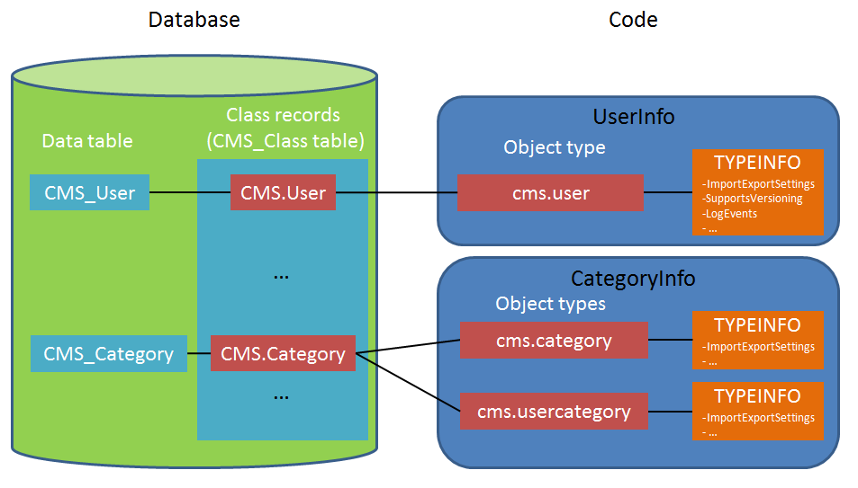

Setting the type information for module classes
Object type information is code that sets the metadata of classes in Kentico. The system uses the type information to determine the basic properties and behavior of objects of the given class, including the following areas:
Relationships with other classes (parent-child, object references and bindings)
Object dependencies (automatic deleting of related objects)
Administration interface components (such as the UniGrid and UniSelector)
Building of administration interface elements based on portal engine templates
The type information is defined in the code of individual Info classes and consists of the following basic parts:
A unique object type name as an identifier (the standard approach is to store the value in a public string constant named OBJECT_TYPE).
A public object of the ObjectTypeInfo class (the standard name for the object is TYPEINFO).
The RegisterObjectType assembly attribute. The attribute assigns the type information definition to the Info class via the unique object type name.
Terminology - Classes and Object types
To make the concepts easier to understand for developers who are new to class development in Kentico, the documentation uses the term "class" to refer to the sum of all metadata defined by a type information instance. This terminology matches the classes that you create in the administration interface of the Modules application. Technically, each type information definition represents an "object type" rather than a class, and some of the default Kentico classes have multiple type information definitions.
Note: The comments and XML-based documentation in the Kentico API use the term "object type" for this purpose.
Tip: You can find an overview of the available object types in the Kentico administration interface. Open the System application and view the Object types tab.

Diagram showing the relationships between type information definitions, classes, object types and Info code. User and Category object types used as examples.
Configuring the type information for custom classes
After creating a new class for a custom module in the Modules application, you can generate basic Info and InfoProvider class files on the Code tab of the class editing interface. The default code of the Info class automatically includes:
The RegisterObjectType assembly attribute.
An object type name assigned to the OBJECT_TYPE constant (the value matches the class's code name by default).
A basic ObjectTypeInfo definition (based on the fields defined for the class).
Click Save code to create the class files in your project. You can then adjust the type information in the code of the given Info class:
Open your Kentico solution in Visual Studio.
Edit the Info class representing your module class.
Navigate to the TYPEINFO field in the class's code.
Set the parameters in the ObjectTypeInfo constructor:
providerType - the Type of the class's InfoProvider class. For example: typeof(ForumPostInfoProvider)
objectType
objectClassName
Class identifiers
Kentico classes have two different identifiers:
object type name (objectType parameter) - defined in the code of the Info class (typically in an OBJECT_TYPE constant). Serves as the primary identifier for the class. Use the object type name to select classes in the API, user interface components (UniGrid, UniSelector), REST calls, etc.
class code name (objectClassName parameter) - the code name assigned to the class in the Kentico administration interface. Identifies the class's definition in the database. For example, use the class code name when writing SQL where conditions for loading and filtering class records.
Most classes use the same value for both identifiers, for example cms.user for user objects. The purpose of having two different identifiers is to allow management of classes with multiple type information definitions that share the same Info code and database class record.
idColumn - the name of the class field that stores the IDs of objects (i.e. the primary key column). Can be null in rare cases (for example binding classes without an identity column).
timeStampColumn - the name of the class field that stores the last modification date for objects. Can be null.
guidColumn - the name of the class field that stores the GUID identifiers of objects. Can be null.
codeNameColumn - the name of the class field that stores the unique text identifiers of objects. Can be null for classes without a dedicated code name column.
displayNameColumn - the name of the class field that stores the visible names of objects (names used in the administration interface or on the live site). Can be null.
binaryColumn - the name of the class field that stores binary data for objects. Can be null.
siteIDColumn - the name of the class field that stores site IDs for site-related objects. Can be null. Only use site ID columns if you do not have a separate binding class for the site relationship.
parentIDColumn - the name of the class field that stores the IDs of parent objects. Set to null for classes without a parent class. See Setting parent-child relationships for classes to learn more.
parentObjectType - the object type name of the class's parent (as defined in the type information of the parent class). Set to null for classes without a parent class.
Use the initializer to set other properties for the ObjectTypeInfo object.
You must always set the ModuleName property to the code name of the module under which the class belongs.
See Reference - ObjectTypeInfo for more information about the available properties.
You can use the type information to configure a large number of scenarios and options for your classes. See the following sections to learn about the most common scenarios:
Object type information example
The following code is an advanced ObjectTypeInfo example. This instance contains the metadata of the system's forum post objects (defined in the ForumPostInfo class).
[assembly: RegisterObjectType(typeof(ForumPostInfo), ForumPostInfo.OBJECT_TYPE)]...public class ForumPostInfo : AbstractInfo<ForumPostInfo>, ISearchable{ // Sets the object type name for the forum post class public const string OBJECT_TYPE = "forums.forumpost"; public static ObjectTypeInfo TYPEINFO = new ObjectTypeInfo(typeof(ForumPostInfoProvider), OBJECT_TYPE, "Forums.ForumPost", "PostID", "PostLastModified", "PostGUID", null, "PostSubject", null, "PostSiteID", "PostForumID", ForumInfo.OBJECT_TYPE) { DependsOn = new List<ObjectDependency> { new ObjectDependency("PostParentID", OBJECT_TYPE, ObjectDependencyEnum.NotRequired), new ObjectDependency("PostApprovedByUserID", UserInfo.OBJECT_TYPE, ObjectDependencyEnum.NotRequired), new ObjectDependency("PostUserID", UserInfo.OBJECT_TYPE, ObjectDependencyEnum.NotRequired) }, LogEvents = true, TouchCacheDependencies = true, SupportsVersioning = false, AllowRestore = false, ModuleName = "cms.forums", SupportsCloning = false, ObjectIDPathColumn = "PostIDPath", ObjectLevelColumn = "PostLevel", OrderColumn = "PostStickOrder", RegisterAsChildToObjectTypes = new List<string> { ForumInfo.OBJECT_TYPE, ForumInfo.OBJECT_TYPE_GROUP }, ImportExportSettings = { IncludeToExportParentDataSet = IncludeToParentEnum.None, LogExport = false, LogProgress = false }, SynchronizationSettings = { LogSynchronization = SynchronizationTypeEnum.None, IncludeToSynchronizationParentDataSet = IncludeToParentEnum.None } }; ...}Classes with multiple type information definitions
A single Info class can have multiple type information definitions representing different variants of the class. All variants share the same Info code and database class record. Each type information definition must be registered under a unique object type name using a separate RegisterObjectType assembly attribute.
An example from the Kentico system classes is CategoryInfo, which has one ObjectTypeInfo instance for global and site page categories and another for personal categories that belong to individual users.
We do not recommend creating custom classes with multiple type information definitions. Such classes require more complex type information settings or custom coding to achieve certain scenarios.
Handling of object type name requests
The following points summarize how the system loads the correct metadata when an object type name is requested:
The RegisterObjectType attributes register all available Info classes under specific Object type names during the initialization of the application.
The system gets the Info class registered for the requested object type name.
The TypeInfo override in the code of the Info class branches to the correct type information definition (ObjectTypeInfo instance) based on a condition.
The type information stores the Class code name, which allows the system to access the class definition in the database.